Je suis |
Xuan Minh |
Archiveur de souvenirs📷
Videaste🎥
Créatif🖌️
Bienvenue
Welcome
velkommen
ยินดีต้อนรับ
witaj
byenvini
ยินดีต้อนรับ
velkommen
Créations
VOTZ, Nude ﹠Fashion - 2021
Matchat & Chafé - 2024
WORK
IN PROGRESS
- 202?
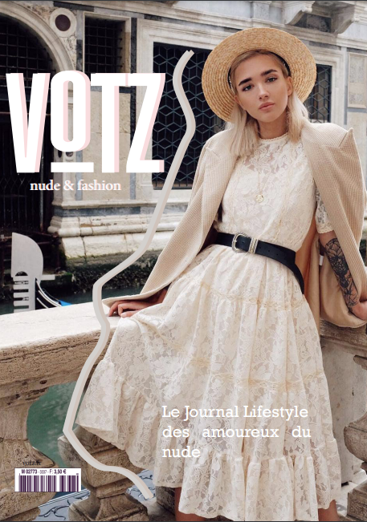
«VOTZ, Nude ﹠Fashion»
Fanzine sur la mode «nude», 2021. Indesign, Photoshop
Fanzine sur la mode «nude», 2021. Indesign, Photoshop
«Matchat & Chafé»
Site web interactif pour en apprendre sur le café de spécialité
et le matcha, 2021. HTML, CSS, JavaScript, H5P. En collaboration avec Sakina Douiou.
Site web interactif pour en apprendre sur le café de spécialité
et le matcha, 2021. HTML, CSS, JavaScript, H5P. En collaboration avec Sakina Douiou.
Projets
• REVIEW. Nike Vandalised LX / HYDROGEN BLUE. - 2020 /
• No Love - 2021 /
• Je suis Pop-Cultivé - 2022 /
• From Pop to the top - 2023 /
• Donner forme a la musique - 2024 /

«REVIEW. Nike Vandalised LX / HYDROGEN BLUE.»
Montage vidéo d'une Review de chaussures, 2020. Premiere Pro, Audacity
Montage vidéo d'une Review de chaussures, 2020. Premiere Pro, Audacity
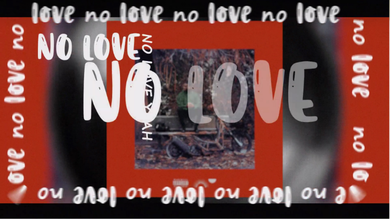
«No love - Dinos ft Marie Plasard»
Kinetype animé sur After Effects, 2021. After Effects
Kinetype animé sur After Effects, 2021. After Effects
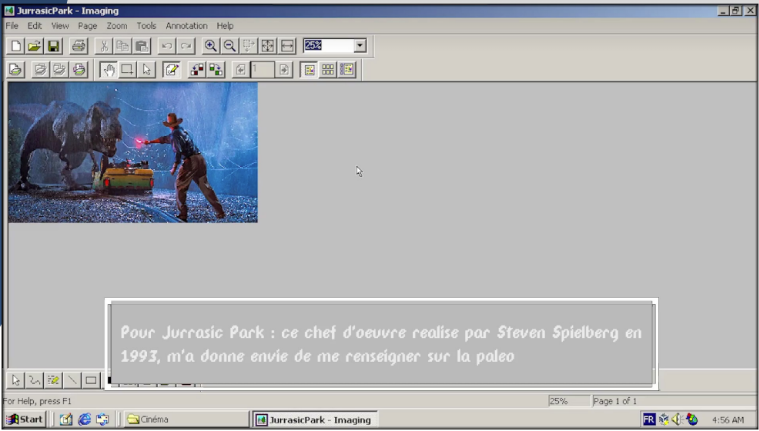
«Je suis popcultivé»
Montage vidéo d’un émulateur VirtualBox, 2022. After Effects, Premiere Pro, Audacity
Montage vidéo d’un émulateur VirtualBox, 2022. After Effects, Premiere Pro, Audacity
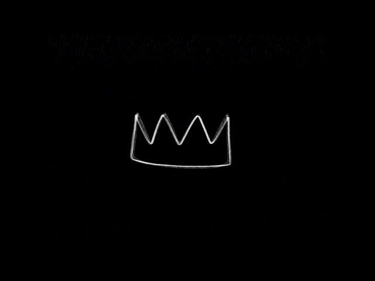
«From Pop to the Top»
Documentaire nostalgique et générationnel, exposé à la ImmixGalerie, "Favori du jury", 2023. After Effects, Premiere Pro, Audacity
Documentaire nostalgique et générationnel, exposé à la ImmixGalerie, "Favori du jury", 2023. After Effects, Premiere Pro, Audacity
«Donner forme à la musique»
Documentaire sur la passion d'un luthier, 2024. After Effects, Premiere Pro, Audacity
Documentaire sur la passion d'un luthier, 2024. After Effects, Premiere Pro, Audacity
Photographies
• What about a time travel ? - 2020 /
• RAW - 2021 /
• Legal Graffiti 3:00PM - 2021 /
• Juin 2003 - Les Gars, on sort ? - 2024 /
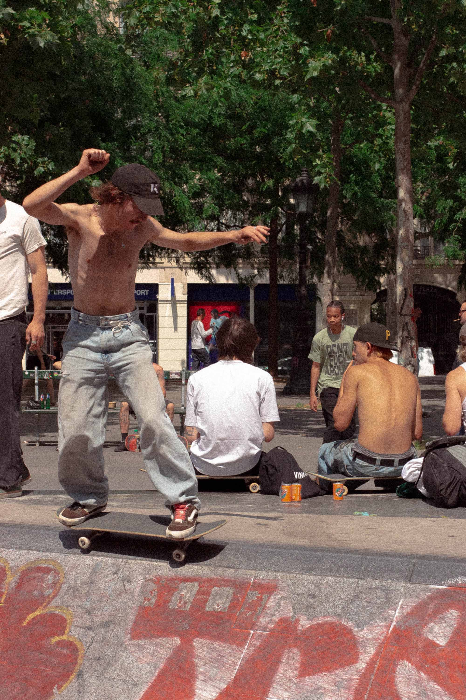
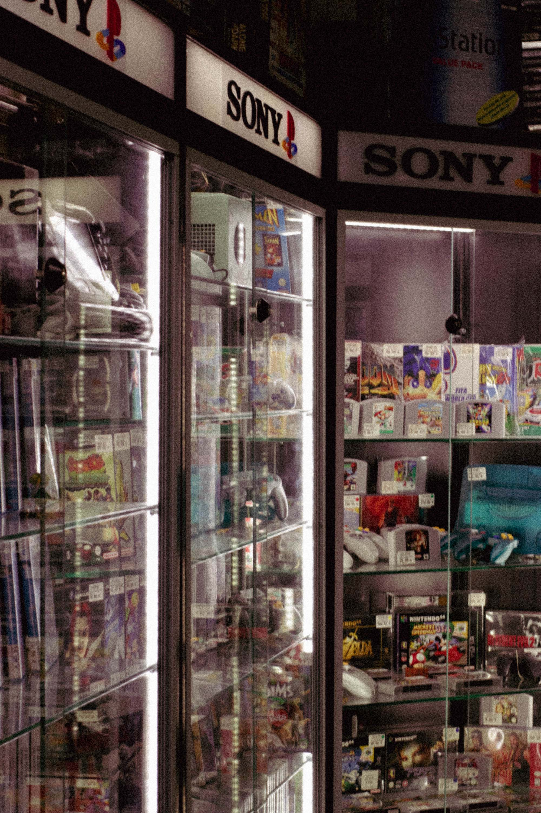
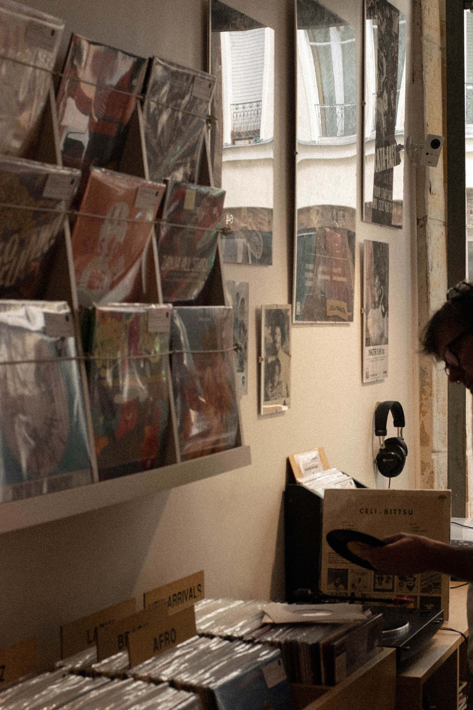
«Juin 2003 - Les Gars, on sort ?»
Série de photographies inspiré de l'aspect graphique des années 2000, 2024. Nikon D5300
Série de photographies inspiré de l'aspect graphique des années 2000, 2024. Nikon D5300


«Legal Graffiti 3:00PM»
Série de photographies, 2020. Canon EOS 750D
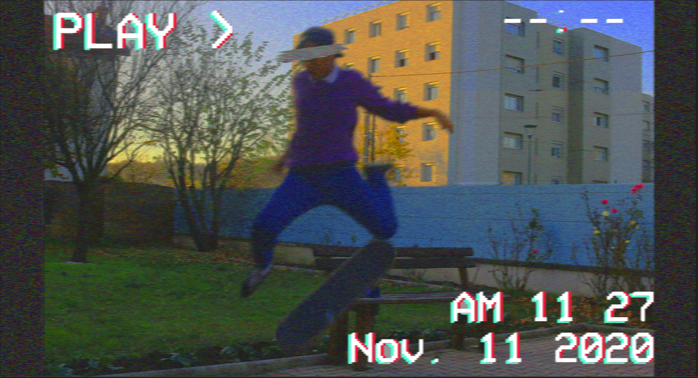
 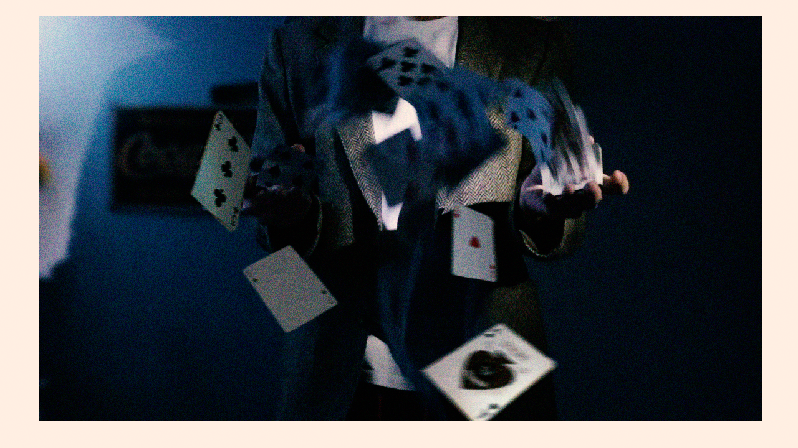
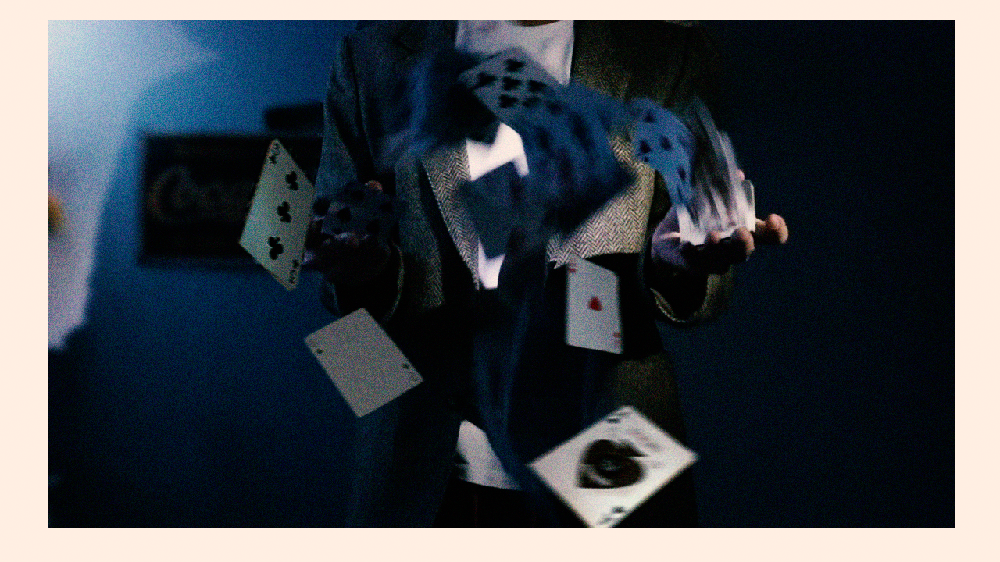
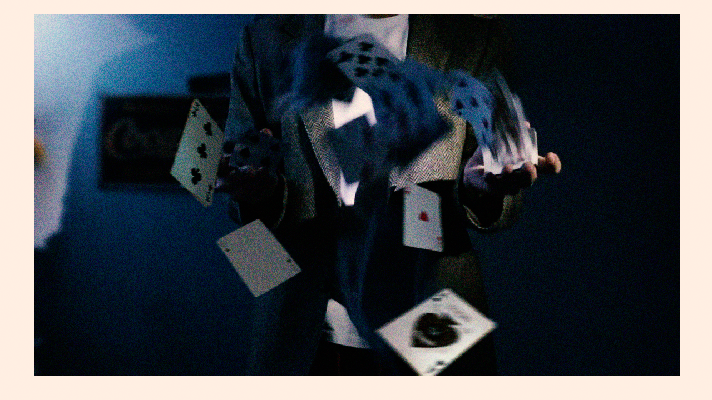
«What a about a time travel ?»
Série de 19 photomontages, 2020. Canon EOS 750D, Photoshop
 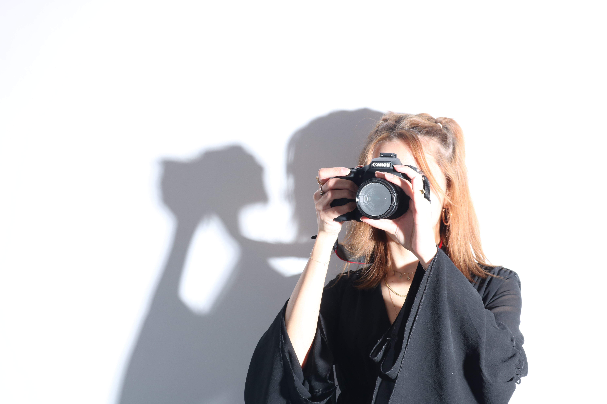
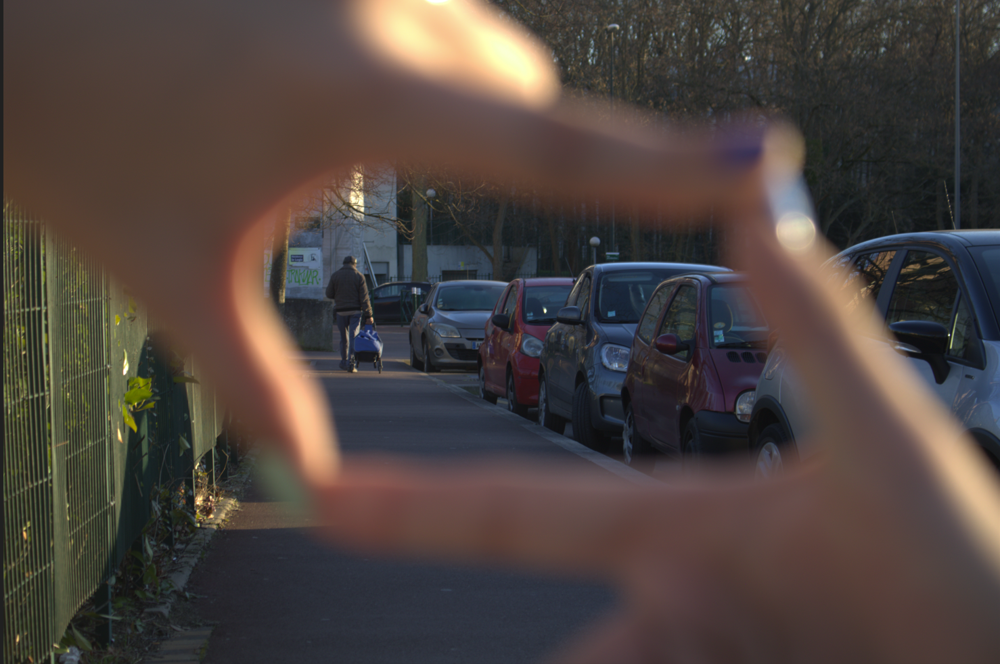
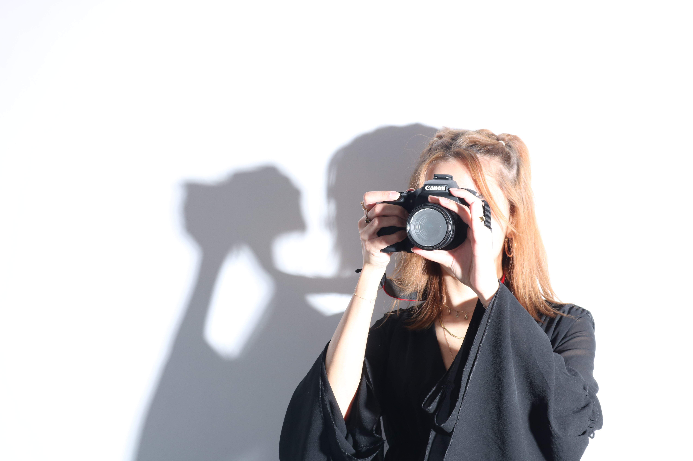
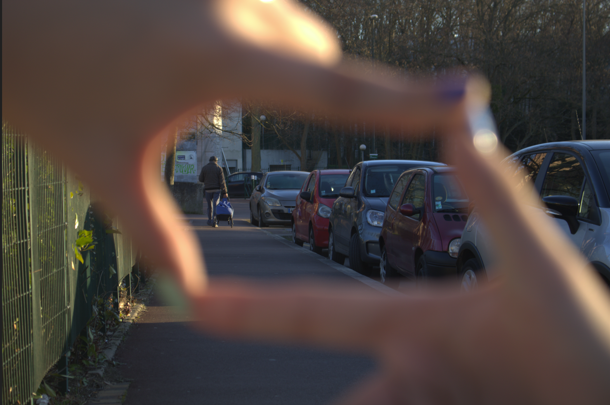
«Raw»
Série de photographies, 2020. Canon EOS 750D
• Who am I ?
Etudiant en arts numériques, Xuan-Minh Tran est une graine d'artiste polyvalent, toujours à la recherche de nouveaux projets, nouvelles pratiques. Il pratique la majeure partie sur le thème du passé et les raisons de son influence sur les générations présentes et du futur.
Déterminé par une soif de nouvelles découvertes, son travail est marqué par l'enfance et les couleurs, dont il souhaite en transmettre les souvenirs et les émotions
Disponible sur 📷 Instagram , ▶️ Youtube, 📧Mail.
Déterminé par une soif de nouvelles découvertes, son travail est marqué par l'enfance et les couleurs, dont il souhaite en transmettre les souvenirs et les émotions
Disponible sur 📷 Instagram , ▶️ Youtube, 📧Mail.
> --------